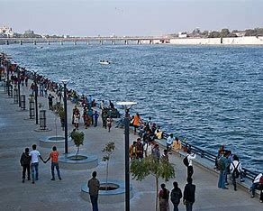

Welcome To Amreli...

Kathiyawadi Moj
Amreli district is one of the 33 administrative districts of the state of Gujarat in western India. The district headquarters are located at Amreli. The district occupies an area of 6,760 km2 and has a population of 1,514,190 of which 22.45% were urban (as of 2011). Amreli is the land of Yogiji Maharaj(Dhari), Danbapu, Sage Muldas, Sage Bhojalrambapa, Sage Muktanand Swami, Magician K.Lal, Zaverchand Megahani's place (Bagasara), Dr. Jivaraj Mehata etc. Amreli covers Dhari Gir National forest sanctuary area. Now it is developing as a Hub of Education.
Initially, Amreli was a small village with an ancient history, and part of various kingdoms and empires established in the area. It shot into prominence, turning from village to town, when the Marathas began acquiring territory and establishing their reign over the region in 1780s. Besides levying taxes on the other rulers of the Kathiawar Peninsula, the Gaekwads also acquired their own territory and chose Amreli as the headquarters for their "Kathewad Pranth", which included Dwarka mandal. Vithalrao Devaji was appointed the Diwan (1801–1820), and during this period, Amreli grew and prospered. Vithalrao Devaji converted much of the adjoining forest land into farm land to realise revenue and also built the Nagnath Mahadev temple. Later in 1886, under the Gaikwad regime, compulsory and free education policy was adopted in Amreli for the first time. From 18th century to 1959, Dwarika and Okhamandal was part of Gaikwad - Amreli state but after 1959, those two cities were merged with Jamnagar district.During the British Raj, the Maratha Gaekwad dynasty organised its Baroda State into four administrative prants (equivalent to British Districts), namely Baroda itself, Kadi (the largest), Navsari and Amreli, the smallest.
Famous Places in Amreli City
- Bhurakhiya Hanumanji Temple
- Shree Khodiyar Temple Kagvad
- Khodiyar Dam Galdhra
- Ambardi Safari Park
- Pania Wild Life Sanctury
- Kankai Mata Temple
- Kamleshwar Dam
Amreli City Famous Food Item
- Pure Cow and Buffalo Milk
- Buttermilk
- Penda
- Mohanthal
- Gathhiya nu Shak
- Lasniya Bateka nu Shak
- Pure Ghee
- Bajrana Rotla
- Ghavana Lotni Bhakhri
© Copyright Reserved
Go To Main Page